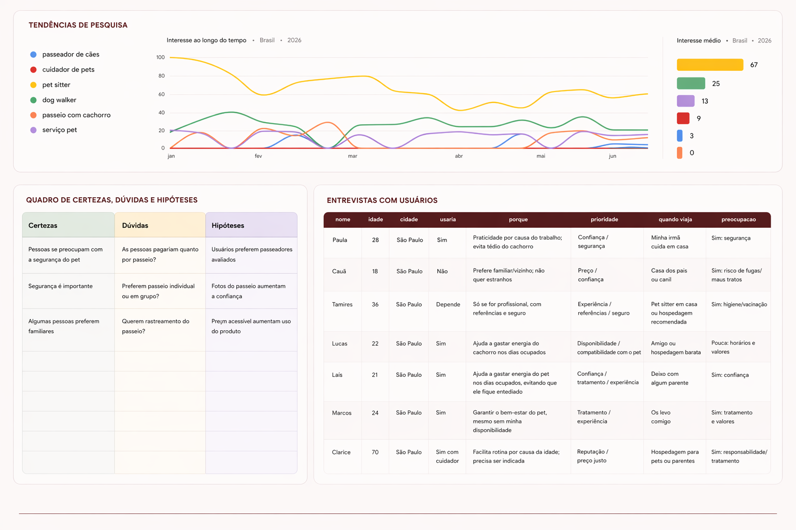

Tutores de pets enfrentam dificuldade em encontrar cuidadores confiáveis, compatíveis com o perfil do animal e disponíveis no momento necessário.
O PetMatch propõe uma experiência baseada em match, permitindo encontrar, comparar e agendar serviços com mais segurança, clareza e praticidade.
Responsável pelo conceito do produto, pesquisa, arquitetura de informação, fluxos de navegação, UI Design e identidade visual.
Protótipo de alta fidelidade, definição de fluxo principal, sistema visual e organização das telas centrais.
A pesquisa combinou análise de tendências de busca, entrevistas exploratórias com usuários e construção de hipóteses sobre comportamento, confiança e critérios de decisão na contratação de serviços para pets.

Confiança é o principal fator na decisão
Compatibilidade com o pet pesa tanto quanto proximidade
Informações claras reduzem insegurança
Foram analisados apps e plataformas de serviços pet para identificar padrões de descoberta, comparação, confiança e conversão dentro da jornada do usuário.


O fluxo foi estruturado para guiar o usuário desde a descoberta até a contratação do serviço.

A interface foi construída para transmitir proximidade, confiança e cuidado, com uma paleta quente e uma hierarquia visual clara.

Estrutura visual das principais telas e organização do produto ao longo do fluxo.

O projeto evoluiu com decisões estratégicas sobre escopo e estrutura, equilibrando clareza de fluxo com complexidade do produto.
A ausência de testes formais com usuários foi a principal limitação, abrindo espaço para validações futuras e refinamento da experiência.